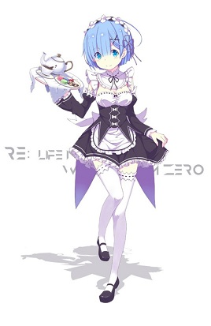

蕾姆
蕾姆，轻小说《Re：从零开始的异世界生活》及其衍生作品的主要角色，在罗兹沃尔的宅邸中一手担当全部杂务的双胞胎女仆中的妹妹，小时候家人被魔女教所杀，姐姐角被斩断，从而憎恨魔女教，初识昴因其身上有魔女气味不待见昴，之后解开误会被昴拯救，认定昴是她的英雄，一心一意的相信并照顾昴，看似毒舌冷漠，其实内心很坚强，很温柔。
2016年斩获第二届Bilibili动画角色人气大赏活动日漫区萌王（女子组第一名）。
角色设定
种族：鬼族
武器：流星锤（铁链连着带棘刺的铁球）
能力：家务万能、鬼化（头上长角，战斗力会增强，但也会精神情绪也会受到影响）、魔法、嗅到魔女的气味
身份：露格尼卡王国，处在边境伯罗兹瓦尔宅邸的双胞胎女仆中的妹妹，鬼族后裔
表面恭维内心瞧不起的毒舌担当，维持着宅邸的机能，与笨手笨脚的拉姆不同，在工作上全能。
角色形象
身高大概150厘米左右，大大的眼睛和桃红色嘴唇，轮廓不太分明的面容显得可爱。发型是齐颈短发，然而头发分界线却有所不同，前留海盖住她的右眼（姐姐是左眼）。一身以黑色为基调的围裙，头上是白色帽饰，除刘海方向、发色和瞳色外和姐姐长得几乎一样，胸部比起姐姐拉姆要更加丰满。
发色：蓝色
瞳色：蓝色
眼神平静，除了敬爱的姐姐以外连商业式微笑都难以看见。（宅邸篇后得以改变）
角色关系
对拉姆
对姐姐拉姆有着绝对的信赖，是个十足的姐控一直觉得姐姐是最优秀的）。因小时候作为鬼的能力不如姐姐而感到自卑，在姐姐为了救自己而失去了角的力量后为了能保护姐姐，以姐姐为目标努力着
对菜月昴
一开始由于昴身上“魔女的香味”以及因为轮回而行动诡异而对昴充满着敌意和怀疑，甚至在轮回中数次下了杀手，但是在经历了种种事件后开始对昴十分信任，将昴的一切都看在眼里，深深地爱上了昴，性格逐渐开始温和，也变得更加爱笑了。在王选篇的轮回中多次为了昴牺牲了自己，始终陪伴着一度鲁莽行事，不断犯错导致轮回，甚至精神崩溃的昴，如同昴精神支柱一般的存在，也正是因为有雷姆始终如一不离不弃的陪伴，昴才找回了寻找完美结局的动力，也对雷姆产生了感情。